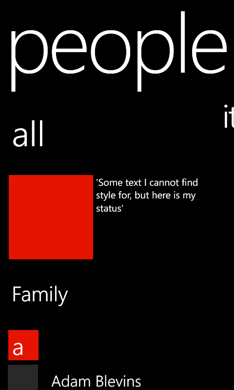
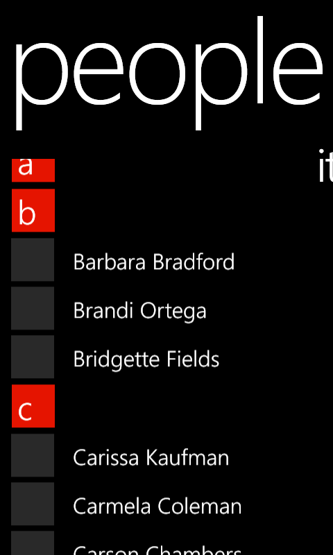
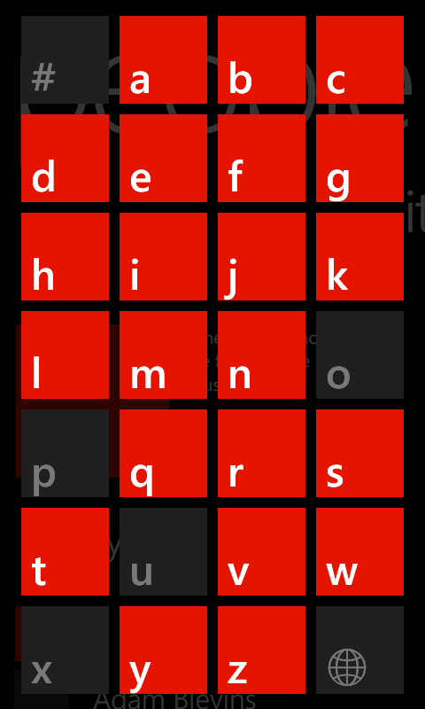

This sample demonstrates how to use Windows Phone 8.0 SDK's LongListSelector control to simulate the People Hub experience on the Windows Phone 8. The sample shows how to correctly group the contacts list to match native phone contact groups(sorted for all locales) and hook up the JumpListStyle to show the jump list of group headers.
Ensure you have downloaded the Windows Phone 8.0 SDK. Download the sample as a zipped solution. Unzip and build the solution.
Description
This sample uses a new managed XAML control LongListSelector added to Windows Phone 8 SDK to match People Hub on Windows Phone 8
LongListSelector - ListHeader

LongListSelector - Sticky Group Headers

JumpGrid using JumpListStyle property from LongListSelector

We follow MVVM design pattern.
More information will soon be available on a blog post. For ease of access/readability without download, inlcuding the helper class for the data structure.
public class AlphaKeyGroup<T> : List<T>
{
const string GlobeGroupKey = "\uD83C\uDF10";
/// <summary>
/// The Key of this group.
/// </summary>
public string Key { get; private set; }
/// <summary>
/// Public ctor.
/// </summary>
/// <param name="key">The key for this group.</param>
public AlphaKeyGroup(string key)
{
Key = key;
}
/// <summary>
/// Create a list of AlphaGroup<T> with keys set by a SortedLocaleGrouping.
/// </summary>
/// <param name="slg">The </param>
/// <returns>Theitems source for a LongListSelector</returns>
private static List<AlphaKeyGroup<T>> CreateDefaultGroups(SortedLocaleGrouping slg)
{
List<AlphaKeyGroup<T>> list = new List<AlphaKeyGroup<T>>();
foreach (string key in slg.GroupDisplayNames)
{
if (key == "...")
{
list.Add(new AlphaKeyGroup<T>(GlobeGroupKey));
}
else
{
list.Add(new AlphaKeyGroup<T>(key));
}
}
return list;
}
/// <summary>
/// Create a list of AlphaGroup<T> with keys set by a SortedLocaleGrouping
/// using the current threads culture to determine which alpha keys to
/// include.
/// </summary>
/// <param name="items">The items to place in the groups.</param>
/// <param name="getKey">A delegate to get the key from an item.</param>
/// <param name="sort">Will sort the data if true.</param>
/// <returns>An items source for a LongListSelector</returns>
public static List<AlphaKeyGroup<T>> CreateGroups(IEnumerable<T> items, Func<T, string> keySelector, bool sort)
{
return CreateGroups(
items,
System.Threading.Thread.CurrentThread.CurrentCulture,
keySelector,
sort);
}
/// <summary>
/// Create a list of AlphaGroup<T> with keys set by a SortedLocaleGrouping.
/// </summary>
/// <param name="items">The items to place in the groups.</param>
/// <param name="ci">The CultureInfo to group and sort by.</param>
/// <param name="getKey">A delegate to get the key from an item.</param>
/// <param name="sort">Will sort the data if true.</param>
/// <returns>An items source for a LongListSelector</returns>
public static List<AlphaKeyGroup<T>> CreateGroups(IEnumerable<T> items, CultureInfo ci, Func<T, string> keySelector, bool sort)
{
SortedLocaleGrouping slg = new SortedLocaleGrouping(ci);
List<AlphaKeyGroup<T>> list = CreateDefaultGroups(slg);
foreach (T item in items)
{
int index = 0;
//if (slg.SupportsPhonetics)
//{
//check if your database has yomi string for item
//if it does not, then do you want to generate Yomi or ask the user for this item.
//index = slg.GetGroupIndex(getKey(Yomiof(item)));
//}
//else
{
index = slg.GetGroupIndex(keySelector(item));
}
if (index >= 0 && index < list.Count)
{
list[index].Add(item);
}
}
if (sort)
{
foreach (AlphaKeyGroup<T> group in list)
{
group.Sort((c0, c1) => { return ci.CompareInfo.Compare(keySelector(c0), keySelector(c1)); });
}
}
return list;
}
}
public class AlphaKeyGroup<T> : List<T> { const string GlobeGroupKey = "\uD83C\uDF10"; /// <summary> /// The Key of this group. /// </summary> public string Key { get; private set; } /// <summary> /// Public ctor. /// </summary> /// <param name="key">The key for this group.</param> public AlphaKeyGroup(string key) { Key = key; } /// <summary> /// Create a list of AlphaGroup<T> with keys set by a SortedLocaleGrouping. /// </summary> /// <param name="slg">The </param> /// <returns>Theitems source for a LongListSelector</returns> private static List<AlphaKeyGroup<T>> CreateDefaultGroups(SortedLocaleGrouping slg) { List<AlphaKeyGroup<T>> list = new List<AlphaKeyGroup<T>>(); foreach (string key in slg.GroupDisplayNames) { if (key == "...") { list.Add(new AlphaKeyGroup<T>(GlobeGroupKey)); } else { list.Add(new AlphaKeyGroup<T>(key)); } } return list; } /// <summary> /// Create a list of AlphaGroup<T> with keys set by a SortedLocaleGrouping /// using the current threads culture to determine which alpha keys to /// include. /// </summary> /// <param name="items">The items to place in the groups.</param> /// <param name="getKey">A delegate to get the key from an item.</param> /// <param name="sort">Will sort the data if true.</param> /// <returns>An items source for a LongListSelector</returns> public static List<AlphaKeyGroup<T>> CreateGroups(IEnumerable<T> items, Func<T, string> keySelector, bool sort) { return CreateGroups( items, System.Threading.Thread.CurrentThread.CurrentCulture, keySelector, sort); } /// <summary> /// Create a list of AlphaGroup<T> with keys set by a SortedLocaleGrouping. /// </summary> /// <param name="items">The items to place in the groups.</param> /// <param name="ci">The CultureInfo to group and sort by.</param> /// <param name="getKey">A delegate to get the key from an item.</param> /// <param name="sort">Will sort the data if true.</param> /// <returns>An items source for a LongListSelector</returns> public static List<AlphaKeyGroup<T>> CreateGroups(IEnumerable<T> items, CultureInfo ci, Func<T, string> keySelector, bool sort) { SortedLocaleGrouping slg = new SortedLocaleGrouping(ci); List<AlphaKeyGroup<T>> list = CreateDefaultGroups(slg); foreach (T item in items) { int index = 0; //if (slg.SupportsPhonetics) //{ //check if your database has yomi string for item //if it does not, then do you want to generate Yomi or ask the user for this item. //index = slg.GetGroupIndex(getKey(Yomiof(item))); //} //else { index = slg.GetGroupIndex(keySelector(item)); } if (index >= 0 && index < list.Count) { list[index].Add(item); } } if (sort) { foreach (AlphaKeyGroup<T> group in list) { group.Sort((c0, c1) => { return ci.CompareInfo.Compare(keySelector(c0), keySelector(c1)); }); } } return list; } }
public List<AlphaKeyGroup<Person>> GroupedPeople
{
get
{
return AlphaKeyGroup<Person>.CreateGroups(
People,
(Person s) => { return s.Name; },
true);
}
}
public List<AlphaKeyGroup<Person>> GroupedPeople { get { return AlphaKeyGroup<Person>.CreateGroups( People, (Person s) => { return s.Name; }, true); } }
<phone:LongListSelector Name="peopleLongListSelector"
ItemsSource="{Binding GroupedPeople}"
JumpListStyle="{StaticResource LongListSelectorJumpListStyle}"
ListHeaderTemplate="{StaticResource LongListSelectorHeaderTemplate}"
GroupHeaderTemplate="{StaticResource LongListSelectorGroupHeaderTemmplate}"
ItemTemplate="{StaticResource LongListSelectorItemTemplate}"
HideEmptyGroups ="true" IsGroupingEnabled ="true" LayoutMode="List">
</phone:LongListSelector>
<phone:LongListSelector Name="peopleLongListSelector" ItemsSource="{Binding GroupedPeople}" JumpListStyle="{StaticResource LongListSelectorJumpListStyle}" ListHeaderTemplate="{StaticResource LongListSelectorHeaderTemplate}" GroupHeaderTemplate="{StaticResource LongListSelectorGroupHeaderTemmplate}" ItemTemplate="{StaticResource LongListSelectorItemTemplate}" HideEmptyGroups ="true" IsGroupingEnabled ="true" LayoutMode="List"> </phone:LongListSelector>
<phone:JumpListItemBackgroundConverter x:Key="BackgroundConverter"/>
<phone:JumpListItemForegroundConverter x:Key="ForegroundConverter"/>
<Style x:Key="LongListSelectorJumpListStyle" TargetType="phone:LongListSelector">
<Setter Property="GridCellSize" Value="111,111"/>
<Setter Property="LayoutMode" Value="Grid" />
<Setter Property="Margin" Value="18,12,0,0"/>
<Setter Property="ItemTemplate">
<Setter.Value>
<DataTemplate>
<Border Background="{Binding Converter={StaticResource BackgroundConverter}}" Margin="6" >
<TextBlock Text="{Binding Key}"
FontFamily="{StaticResource PhoneFontFamilySemiBold}"
FontSize="48" Padding="11,0,0,0"
Foreground="{Binding Converter={StaticResource ForegroundConverter}}" VerticalAlignment="Bottom" />
</Border>
</DataTemplate>
</Setter.Value>
</Setter>
</Style>
<phone:JumpListItemBackgroundConverter x:Key="BackgroundConverter"/> <phone:JumpListItemForegroundConverter x:Key="ForegroundConverter"/> <Style x:Key="LongListSelectorJumpListStyle" TargetType="phone:LongListSelector"> <Setter Property="GridCellSize" Value="111,111"/> <Setter Property="LayoutMode" Value="Grid" /> <Setter Property="Margin" Value="18,12,0,0"/> <Setter Property="ItemTemplate"> <Setter.Value> <DataTemplate> <Border Background="{Binding Converter={StaticResource BackgroundConverter}}" Margin="6" > <TextBlock Text="{Binding Key}" FontFamily="{StaticResource PhoneFontFamilySemiBold}" FontSize="48" Padding="11,0,0,0" Foreground="{Binding Converter={StaticResource ForegroundConverter}}" VerticalAlignment="Bottom" /> </Border> </DataTemplate> </Setter.Value> </Setter> </Style>